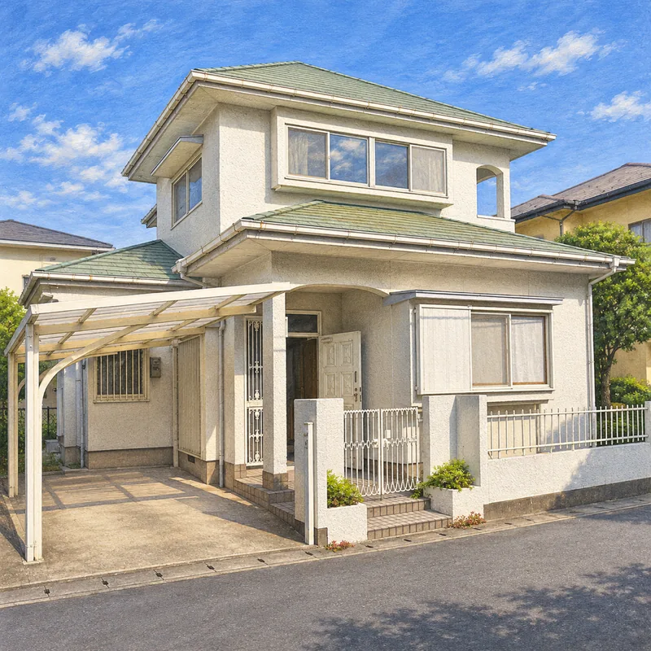
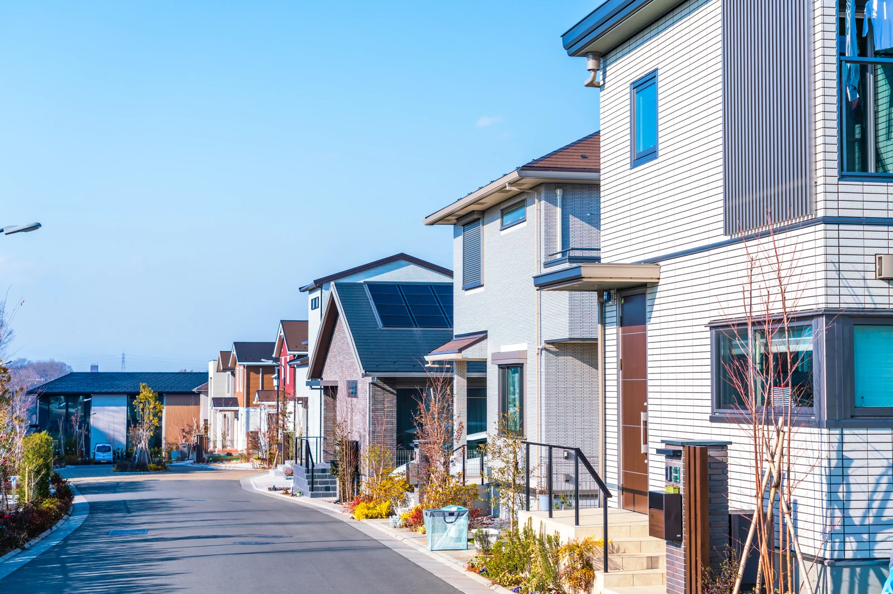
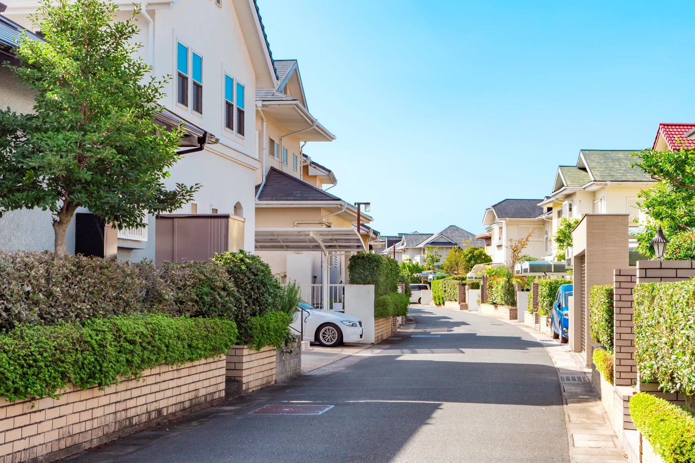
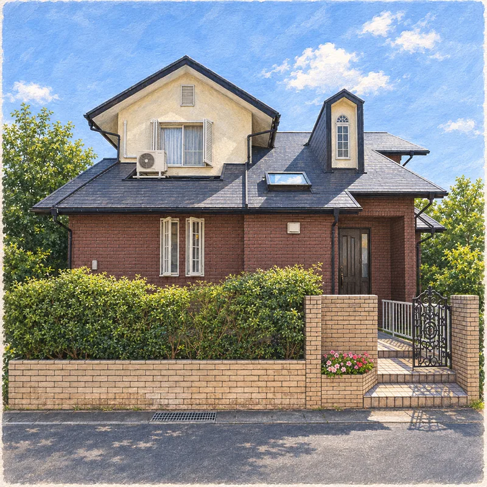
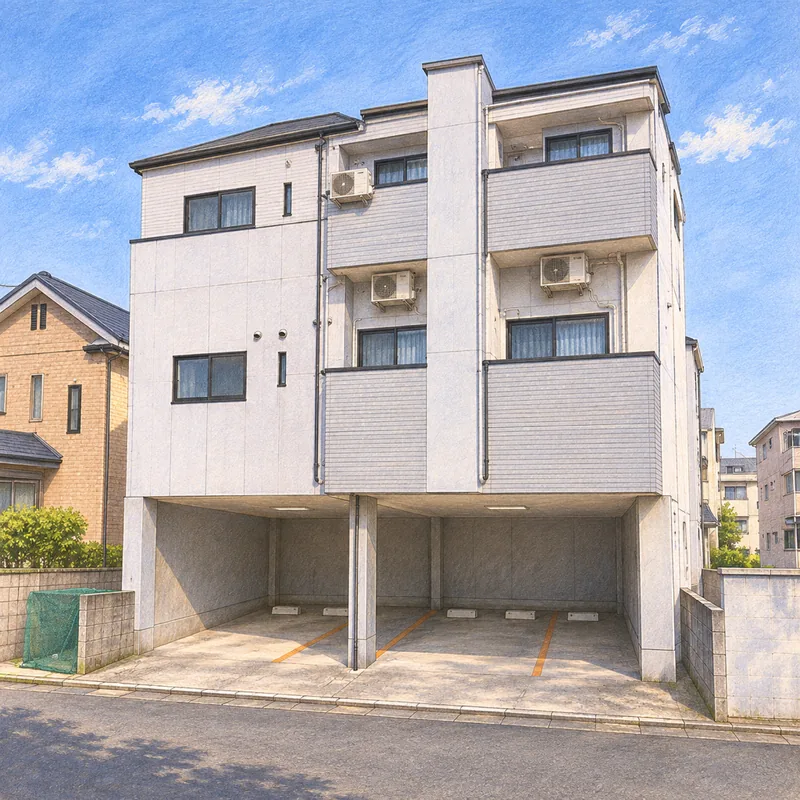
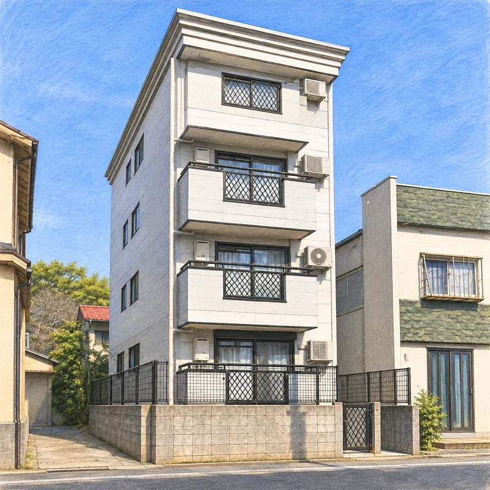
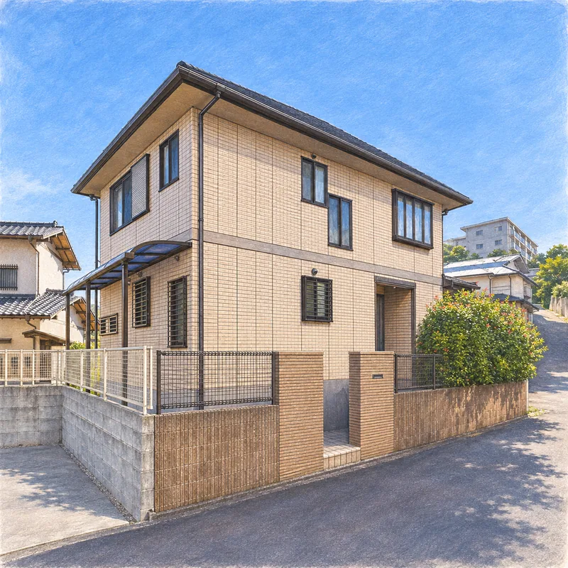
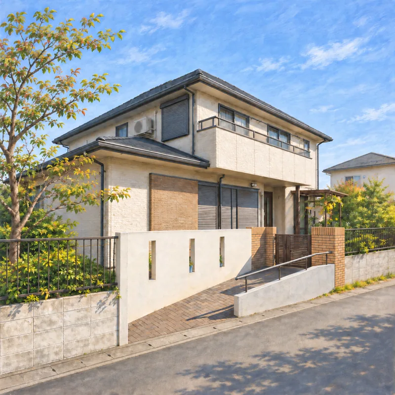

COCOHAUS 七隈
福岡市城南区七隈3丁目16-29
アクセスを見る
金山駅から徒歩5分
個室・Wi-Fi・家具家電の用意があります。
グループホーム COCOHAUS

個室で過ごしながら、食事や生活の支援を受けられる住まいです。必要な支援を相談し、ご本人に合う暮らし方を考えます。
夜間の対応や医療面の支援は、住居やご本人の状況により異なります。見学・相談の際にご確認ください。
食事の提供や、掃除などの生活上の支援。
体調の確認や、服薬についての支援。
生活で困っていることや、これからの暮らしの相談。

日中活動や仕事、体調に合わせて過ごします。以下は資料にある生活の一例です。
身支度をして、それぞれの日中の予定へ。
仕事・福祉サービスの利用など、ご本人の予定に合わせて活動します。
部屋や共用スペースで過ごすなど、それぞれの時間を過ごします。
食事や入浴を済ませ、夜の時間を過ごします。
時刻は一例です。住居・生活スタイルによって異なります。

福岡市城南区七隈3丁目16-29
金山駅から徒歩5分
個室・Wi-Fi・家具家電の用意があります。

福岡市西区愛宕浜1丁目2-1
マリナタウン第一バス停から徒歩5分
個室・Wi-Fi・家具家電の用意があります。

福岡市西区愛宕1丁目26-1
室見駅・姪浜駅から徒歩10分
個室・Wi-Fi・家具家電の用意があります。

福岡市早良区高取1丁目21-4
藤崎駅から徒歩10分
個室・Wi-Fi・家具家電の用意があります。

福岡市南区大池2丁目14-16
寺塚2丁目バス停から徒歩5分
個室・Wi-Fi・家具家電の用意があります。

福岡市西区野方6丁目10-10
拾六町団地南バス停から徒歩5分
個室・Wi-Fi・家具家電の用意があります。
外観は実際の建物をもとに描いたイラストです。現在の空室や設備、個室・共用部の様子は、見学時にご確認いただけます。
35,000–36,000円／月
住居・お部屋により異なります。共益費が別途必要なお部屋があります。
家賃の補助を利用できる場合があります。対象条件と、ご自身の負担額はご相談時にご案内します。
月額総額は利用する食事やお部屋によって変わります。見学の際に内訳をご説明します。
家賃35,000円のお部屋で30日間利用した場合の、家賃と食費だけの計算例です。
朝・夕の2食を利用
59,000円
家賃35,000円
＋（朝300円＋夕500円）×30日
朝・昼・夕の3食を利用
71,000円
家賃35,000円
＋（朝300円＋昼400円＋夕500円）×30日
月額総額ではありません。光熱水費・日用品費・共益費・サービス自己負担等は含まず、家賃補助を引く前の金額です。お部屋・食事の利用回数等によって変わります。
初期費用の有無と内訳は、ご希望の住居の条件を確認してご案内します。食事を利用しない場合は、資料上は提供日の3日前（提供日を除く）までの連絡が必要です。詳しい精算条件は利用前にご説明します。
お部屋や共用スペースを見ながら、支援の内容や費用を確認できます。体験利用をご希望の方も、ご相談ください。
希望する支援や、知りたいことをお聞かせください。
過ごす場所や支援の内容を、一緒に確認します。
費用や必要な手続きについて、利用前にご案内します。
一時的な宿泊をご希望の方へ
入居のための体験利用とは、手続き・費用が異なります。
入居前に暮らしを体験したい方は、ご希望の住居と日程をお知らせください。空きや支援内容を確認してご案内します。
GH入居のための体験と、短期入所は別のサービスです。
現在ご案内している住居は個室です。部屋の広さや設備、共用スペースは住居ごとに異なります。写真だけでは分からない点も見学時にご確認ください。
夜間の見守りや緊急時の対応についてご案内します。職員の配置方法や看護師の対応時間、受けられる支援は住居・ご本人の状況に合わせて確認します。
生活スタイルや希望をお聞かせください。外出・外泊時の連絡方法や食事の取消など、住居での生活上のルールを入居前にご説明します。
同行を希望する方と人数を、ご予約時にお知らせください。日程を調整してご案内します。
現在の空き状況はお問い合わせください。希望する地域・住居、入居時期をお伝えいただくと確認がスムーズです。
生活や作業で大切にしたいことを伺い、必要な支援を一緒に考えます。
虐待の防止と身体拘束の適正化に関する方針に沿って、ご本人の尊厳を大切にします。
ご本人・ご家族からのご意見や相談を受け付け、支援の改善につなげます。
地域の皆さんと、支援をよりよく。
地域連携推進会議の公表記録をご覧いただけます。
ご本人はもちろん、ご家族・相談支援専門員の方もご相談ください。